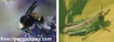
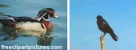

akesi - 爬虫類、両生類(reptile, amphibian)
kala - 魚、或いは水生動物(fish or an animal that live in water)
kasi - 植物(plant)
moli - 死; 死ぬ、殺す(death; to die, to kill)
soweli - 哺乳類(mammal)
waso - 鳥(bird)
pipiはあらゆる種類の虫であることを忘れないで下さい。 生物名の曖昧性
レッスン14までに何度も何度もトキポナの語彙は非常に曖昧で不特定であることを御覧になったと思います。はい、植物や動物の名前も例外ではありません。異なったグループをさらっとなぞり、その過程でそれぞれの2、3のことがらを述べます。それでは始めましょう。
しかしながら、ある意味を得ようとするために形容詞とpi句を使用することは出来ます。例えば、ここに有毒へびについて話す良い方法があります: akesi pi telo moli ("死の水の爬虫類/両生類(reptile/amphibian of deadly liquid)")。この項は有毒へびや人に飛び掛るだけで人を殺せる有毒のがえるに適用出来るでしょう。
pipi
pipiは、くも、アリ、ゴキブリ、そして蝶を含む全ての種類の虫に対して使用されます。ここにpipiの2、3の例があります:

soweli
soweliは基本的に全ての種類の哺乳類のための単語です。ここに2、3の例があります:
もしsoweliから取れた肉(牛肉や豚肉)を食べているならば、それはまだsoweliと呼ばれます。肉のための別の単語はありません; それは全て同じです:
soweli ni li pona moku. -- この牛は食べるのに良いです。(This cow is good to eat.)
ところで、pona mokuを"味わいのある(tasty)"や"おいしい(delicious")を意味するのに使用されます。
waso
wasoは全ての鳥と飛行する動物を含みます。ここに2、3の例があります:

soweliと同様、もし鳥から取れた肉を食べているならば、それはまだwasoと呼びます。例えば:
mi wile moku e waso. -- 鶏肉を食べたいです。(I want to eat chicken.)
moli
この単語に関して難しいことは何もありません。それを御理解頂いていることを確かめるために単に2、3の例を示したいと思いました。それは何かが死んでいることを言うのに使用出来ます:
pipi li moli. -- その虫は死んでいます。(The bug is dead.)
もし何かが死にかけで、それでもまだ死んでいないということを言いたければ、kama moliを使用して下さい。kamaはkama jo(得る)やkama sona(学ぶ)といったフレーズで見てきた様に、moliに対して今進行中といったのような効果を与えます。
soweli li kama moli. -- そのチータは死にそうです。(The cheetah is dying.)
そして、何か他のものを殺している何かについて話すためにもmoliを使用します:
jan li moli e waso. -- その人はその鳥を殺しました。(The person killed the bird.)
練習
日本語からトキポナにこれらの文を訳してみて下さい。
子犬が欲しいです。(I want a puppy.)
あっ!恐竜が私を食べたがっている!(Ahh! The dinosaur wants to eat me!)
蚊に刺されました。(The mosquito bit me.)
牛はモーと言います。(Cows say moo.)
Birds fly in air.
Think: "Birds go in air."
Let's eat fish.
花はかわいいです。(Flowers are pretty.)
考えて下さい: "カラフルな植物は見るのに良いです。(Colorful plants are good to see.)"
はい、それでは今度はトキポナから日本語にこれらの文を訳してみて下さい:
mama ona li kepeken e kasi nasa.
akesi li pana e telo moli.
pipi li moku e kasi.
soweli mi li kama moli.
jan Pawe o, mi wile ala moli.
kasi li pona tawa mi.
mi lon ma kasi.